Contents
clc
Datos físicos
g = 9.81; % Geometría V1 = 0.5; % m^3 (500 L) D1 = 0.66; % m A1 = pi*(D1/2)^2; V2 = 0.1; % m^3 (100 L) D2 = 0.40; % m A2 = pi*(D2/2)^2; h1_max = V1/A1; h2_max = V2/A2;
Parámetros hidráulicos
k12 = 5e-4; k2 = 1e-3;
Caudal deseado de salida
q2_star = 0.002; % m^3/s (2 L/s)
Altura de equilibrio en el tanque 2
h2_star = (q2_star/k2)^2 / (2*g);
Caudal nominal requerido
u_star = k2 * sqrt(2*g*h2_star); % si se hacen los cálculos se nota que en equulibrio todos los caudales son iguales, así que este resultado tiene sentido
Altura en tanque 1 en equilibrio
h1_star = h2_star + (u_star/k12)^2/(2*g);
Mostrar resultados
fprintf('--- RESULTADOS ---\n'); fprintf('h1_max = %.3f m\n', h1_max); fprintf('h2_max = %.3f m\n\n', h2_max); fprintf('h2* = %.3f m\n', h2_star); fprintf('u* = %.6f m^3/s (%.3f L/s)\n', u_star, u_star*1000); fprintf('h1* = %.3f m\n', h1_star);
--- RESULTADOS --- h1_max = 1.461 m h2_max = 0.796 m h2* = 0.204 m u* = 0.002000 m^3/s (2.000 L/s) h1* = 1.019 m
linealización
$\section*{Modelo no lineal del sistema de dos tanques}
\subsection*{Variables y parámetros}
\begin{itemize} \item 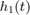, 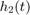: niveles de líquido en los tanques 1 y 2 [$\mathrm{m}$] \item 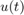: caudal de entrada al tanque 1 [$\mathrm{m^3/s}$] \item  , 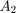: áreas de sección transversal de los tanques [$\mathrm{m^2}$] \item 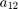: área efectiva del orificio entre tanques [$\mathrm{m^2}$] \item 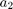: área efectiva del orificio de salida del tanque 2 [$\mathrm{m^2}$] \item 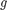: aceleración de la gravedad [$\mathrm{m/s^2}$] \end{itemize}
, 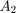: áreas de sección transversal de los tanques [$\mathrm{m^2}$] \item 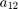: área efectiva del orificio entre tanques [$\mathrm{m^2}$] \item 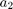: área efectiva del orificio de salida del tanque 2 [$\mathrm{m^2}$] \item 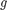: aceleración de la gravedad [$\mathrm{m/s^2}$] \end{itemize}
\subsection*{Caudales}
Caudal entre tanques (ley de Torricelli): \[ q_{12}(t) = a_{12}\,\sqrt{2g}\,\sqrt{h_1(t) - h_2(t)} \]
Caudal de salida al ambiente: \[ q_2(t) = a_2\,\sqrt{2g}\,\sqrt{h_2(t)} \]
\subsection*{Ecuaciones dinámicas no lineales}
Tanque 1: \[ A_1 \,\dot{h}_1(t) = u(t) - q_{12}(t) \]
o equivalentemente: \[ \dot{h}_1(t) = \frac{1}{A_1}\,u(t) - \frac{a_{12}}{A_1}\,\sqrt{2g}\,\sqrt{h_1(t) - h_2(t)} \]
Tanque 2: \[ A_2 \,\dot{h}_2(t) = q_{12}(t) - q_2(t) \]
o equivalentemente: \[ \dot{h}_2(t) = \frac{a_{12}}{A_2}\,\sqrt{2g}\,\sqrt{h_1(t) - h_2(t)} - \frac{a_2}{A_2}\,\sqrt{2g}\,\sqrt{h_2(t)} \]
\subsection*{Forma en espacio de estados}
Definiendo el vector de estado: \[ x(t) = \begin{bmatrix} h_1(t) \\ h_2(t) \end{bmatrix} \]
el sistema queda: \[ \dot{x}(t) = \begin{bmatrix} \dfrac{1}{A_1} u(t) - \dfrac{a_{12}}{A_1}\sqrt{2g}\sqrt{h_1 - h_2} \\[10pt] \dfrac{a_{12}}{A_2}\sqrt{2g}\sqrt{h_1 - h_2} - \dfrac{a_2}{A_2}\sqrt{2g}\sqrt{h_2} \end{bmatrix} \]
\subsection*{Condiciones de equilibrio}
En un punto de operación 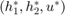 se cumple: \[ u^\ast = a_{12}\sqrt{2g}\sqrt{h_1^\ast - h_2^\ast} \]
\[ a_{12}\sqrt{h_1^\ast - h_2^\ast} = a_2\sqrt{h_2^\ast} \]
$
Parámetros
g = 9.81; A1 = 0.015; A2 = 0.02; k12 = 5e-4; k2 = 1e-3;
Punto de operación
h1s = 1.019; h2s = 0.204; us = 0.002; Dh = h1s - h2s;
Derivadas
dq12_dh1 = k12*sqrt(2*g)/(2*sqrt(Dh)); dq12_dh2 = -k12*sqrt(2*g)/(2*sqrt(Dh)); dq2_dh2 = k2 *sqrt(2*g)/(2*sqrt(h2s));
Matrices linealizadas
A = [ ... -dq12_dh1/A1, -dq12_dh2/A1; dq12_dh1/A2, (dq12_dh2 - dq2_dh2)/A2 ]; B = [1/A1; 0]; C = [0 1]; D = 0; sysc = ss(A,B,C,D); Ts = 1; % discretizado a 1 s sysd = c2d(sysc, Ts, 'zoh');